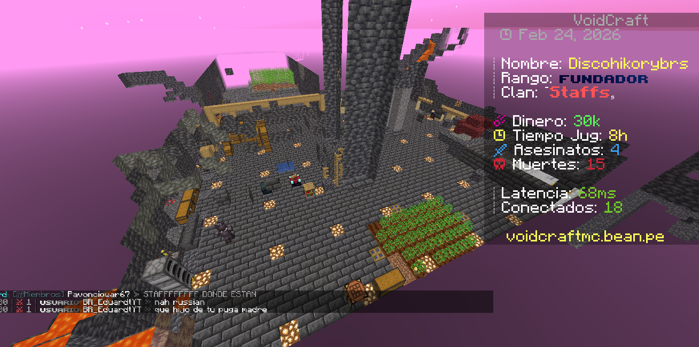
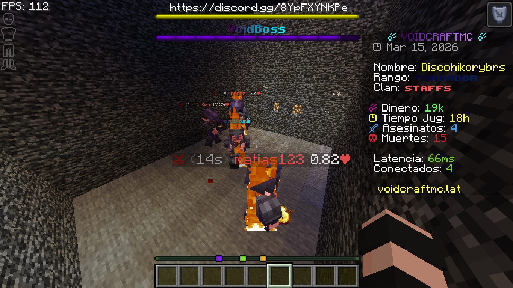
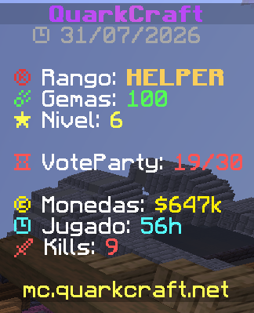

VoidCraft / MineSnake5 meses
Participé como Founder + Lead Developer.
✓ Tengo evidencia disponibleSTAFF PORTFOLIO · MINECRAFT & DISCORD
Soy Staff, administrador y developer enfocado en comunidades de Minecraft y Discord.
Minecraft / Discord
Soy una persona enfocada en la administración, moderación y desarrollo de comunidades de Minecraft y Discord. Cuento con 4 años de experiencia dentro de este ámbito y durante ese tiempo he tenido la oportunidad de asumir diferentes responsabilidades y cargos.
He participado en proyectos desempeñando funciones de Low Staff y High Staff, además de trabajar en áreas de desarrollo y administración. Gracias a estas experiencias he aprendido a desenvolverme dentro de distintos equipos, atender a los usuarios y adaptarme a las necesidades de cada proyecto.
Me interesa aportar tanto en la organización de una comunidad como en su parte técnica. Busco resolver problemas de manera eficaz, mantener una buena comunicación con el equipo y seguir mejorando mis conocimientos con cada proyecto en el que participo.
Participé como Founder + Lead Developer.
✓ Tengo evidencia disponibleParticipé como Founder + Developer.
Sin evidencia disponible actualmenteParticipé como Developer.
Sin evidencia disponible actualmenteComencé como Trial-Admin y llegué a Manager + Developer.
Sin evidencia disponible actualmenteParticipé como CEO + Mod.
Sin evidencia disponible actualmenteParticipé como Manager + Developer.
Sin evidencia disponible actualmenteParticipé como Discord Developer + Support.
Sin evidencia disponible actualmenteParticipé como Head-Admin.
Sin evidencia disponible actualmenteParticipé como Helper.
✓ Tengo evidencia disponibleActualmente conservo capturas de VoidCraft/MineSnake y QuarkCraft. De mis demás proyectos no dispongo de capturas o archivos de respaldo porque tuve un cambio de dispositivo. Aun así, mantengo la información de los cargos y responsabilidades que desempeñé durante esas experiencias.






Participé como Helper. Las capturas muestran mi rango, mi actividad y diferentes momentos de mi experiencia dentro de la comunidad.
✓ Tengo evidencia disponibleMinecraft: puedo aportar experiencia en administración de servidores, moderación, Staff Management, configuración y desarrollo.
Discord: puedo apoyar en administración, moderación, soporte, organización de comunidades y desarrollo de bots.
Equipo: puedo asumir responsabilidades, adaptarme a diferentes rangos y colaborar con otros miembros del Staff.
En algunos momentos tuve que retirarme temporalmente de distintos servidores y proyectos principalmente por falta de tiempo. Aun así, considero que cada experiencia me ayudó a aprender, asumir nuevas responsabilidades y mejorar mi forma de trabajar dentro de un equipo.
¿TRABAJAMOS JUNTOS?
Si quieres contactarme para hablar sobre un proyecto, una oportunidad de Staff o desarrollo, puedes escribirme directamente por Discord.